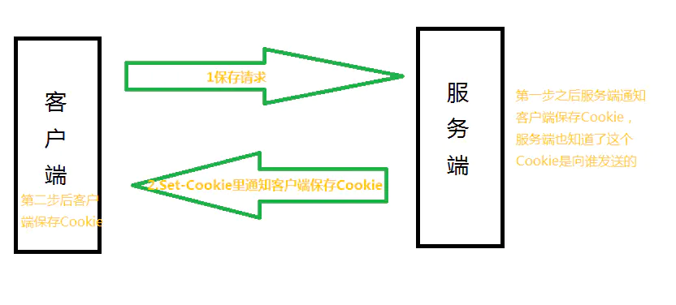
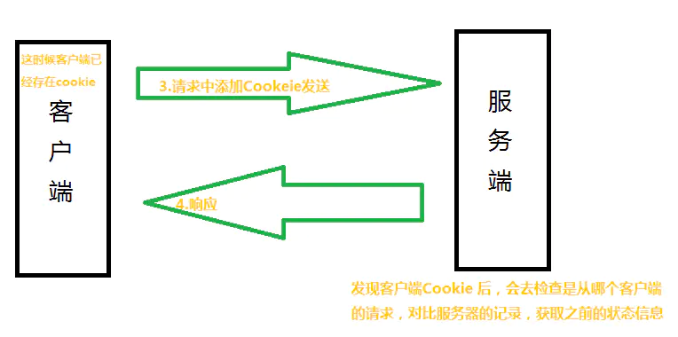
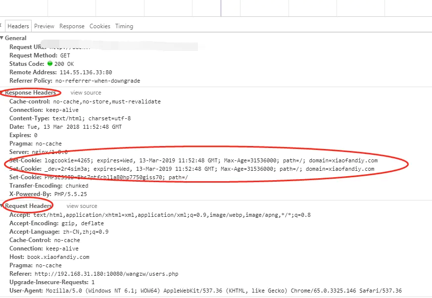
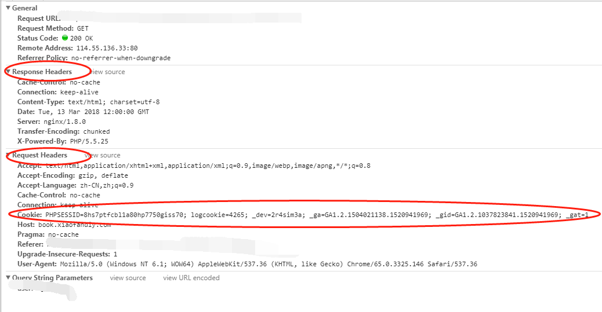
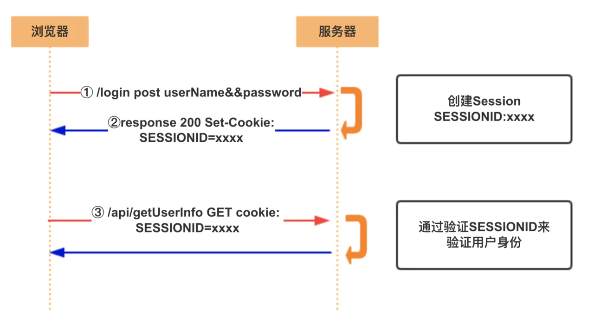
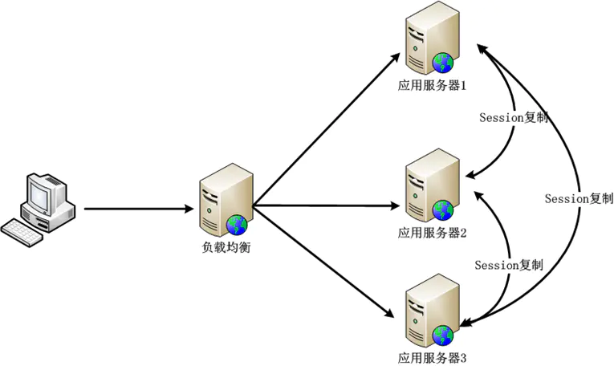
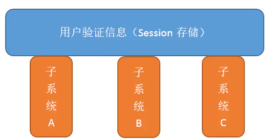
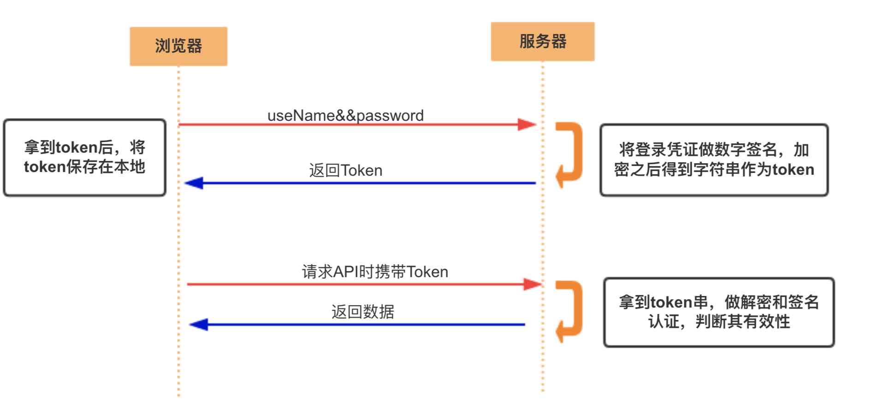
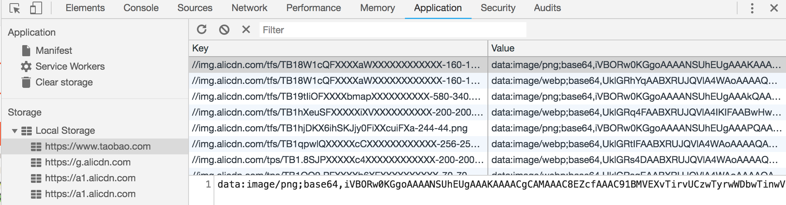
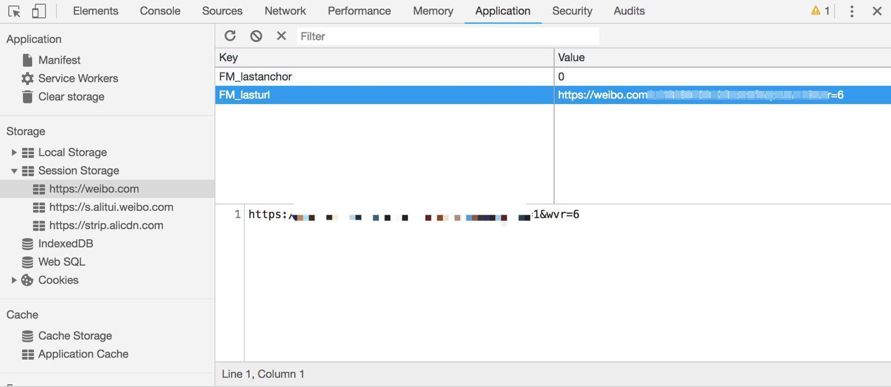

重点解析的Cookie、Session和Web Storage区别与使用。
Cookie
什么是Cookie
Cookie是客户端技术，程序把每个用户的数据以cookie的形式写给用户各自的浏览器。当用户使用浏览器再去访问服务器中的web资源时，就会带着各自的数据去。这样，web资源处理的就是用户各自的数据了。
Cookie技术通过请求和响应报文中写入Cookie信息来控制客户端的状态（同源共享）第一次发起请求

客户端保存了Cookie之后的发起请求

首部字段内没有Cookie的相关信息，能看到set-Cookie里的信息，这就是服务器端生成的Cookei信息。

请求报文里都自动发送Cookie信息

Cookie细节
- 一个Cookie只能标识一种信息，它至少含有一个标识该信息的名称（NAME）和设置值（VALUE）。
- 一个WEB站点可以给一个WEB浏览器发送多个Cookie，一个WEB浏览器也可以存储多个WEB站点提供的Cookie。
- 浏览器一般只允许存放300个Cookie，每个站点最多存放20个Cookie，每个Cookie的大小限制为4KB。
- 如果创建了一个cookie，并将他发送到浏览器，默认情况下它是一个会话级别的cookie（即存储在浏览器的内存中），用户退出浏览器之后即被删除。若希望浏览器将该cookie存储在磁盘上，则需要使用Max-Age，并给出一个以秒为单位的时间。将最大时效设为0则是命令浏览器删除该cookie。
- 注意，删除cookie时，path必须一致，否则不会删除
set-Cookie的字段的属性
Set-Cookie: logcookie=3qjj; expires=Wed, 13-Mar-2019 12:08:53 GMT; Max-Age=31536000; path=/;
domain=fafa.com;secure; HttpOnly;
-
logcookie=3qjj赋予Cookie的名称和值，logcookie是名字 ，3qjj是值 -
expires 是设置cookie有效期。
当省略expires属性时，Cookie仅在关闭浏览器之前有效。可以通过覆盖已过期的Cookie，设置这个Cookie的过期时间是过去的时间，实现对客户端Cookie 的实质性删除操作。
-
path 是限制指定Cookie 的发送范围的文件目录。
不过另有办法可避开这项限制，看来对其作为安全机制的效果不能抱有期待。
-
domain 通过domain属性指定的域名可以做到与结尾匹配一致。
比如，指定domain是fafa.com，除了fafa.com那么www.fafa.com等都可以发送Cookie。
- secure 设置web页面只有在HTTPS安全连接时，才可以发送Cookie。HTTP则不可以进行。
-
HttpOnly 它使JavaScript 脚本无法获得Cookie。
通过上述设置，通常从Web 页面内还可以对Cookie 进行读取操作。但使用JavaScript 的document.cookie 就无法读取Cookie 的内容了
优缺点
优点：
- 简单
- 不需要服务器资源
- 可以配置 cookie 的过期日期，数据持久性存储
缺点：
- cookie 的数量和长度有限制
- 同源请求时携带传递，损耗带宽（cookie 信息越大，完成对服务器请求的时间越长）
- 安全性（cookie 数据并非存储在安全环境，可以被他人访问）
Session
什么是Session
session从字面上讲，就是会话。服务器需要知道当前请求是谁发给自己的，因此给每个客户端分配不同的”身份标识”，然后客户端每次向服务器发请求的时候，都带上这个”身份标识“，服务器就知道这个请求来自与谁了。 至于客户端怎么保存这个“身份标识”，可以有很多方式，对于浏览器客户端，大家都采用cookie的方式。
Session: 是在服务端保存的一个数据结构，用来跟踪用户的状态，这个数据可以保存在集群、数据库、文件中。
过程(服务端Session + 客户端 sessionId)

- 用户向服务器发送用户名和密码
- 服务器验证通过后,在当前对话(
session)里面保存相关数据,比如用户角色, 登陆时间等; - 服务器向用户返回一个
session_id, 写入用户的cookie - 用户随后的每一次请求, 都会通过
cookie, 将session_id传回服务器 - 服务端收到
session_id, 找到前期保存的数据, 由此得知用户的身份
服务器端重写网页上所有的URL地址，使得网页上所有URL地址后面带上用户的sessionid，重写后的URL地址类似于www.baidu.com;jsessionid=1354646546。request.getSession方法内部会从用户携带的cookie和url地址中查找用户的sessionid，返回用户的session。
扩展性不好
如果服务器集群，或者是跨域的服务导向架构，这就要求session数据共享，每台服务器都能够读取session。
A网站和B网站是同一家公司的关联服务。现在要求，用户只要在其中一个网站登录，再访问另一个网站就会自动登录，请问怎么实现？（实现单点登录的问题）
- Nginx ip_hash 策略，服务端使用 Nginx 代理，每个请求按访问 IP 的 hash 分配，这样来自同一 IP 固定访问一个后台服务器，避免了在服务器 A 创建 Session，第二次分发到服务器 B 的现象。
- Session复制：任何一个服务器上的 Session 发生改变（增删改），该节点会把这个 Session 的所有内容序列化，然后广播给所有其它节点。

- 共享Session：将Session Id 集中存储到一个地方，所有的机器都来访问这个地方的数据。这种方案的优点是架构清晰，缺点是工程量比较大。另外，持久层万一挂了，就会单点失败；

Token

- 用户通过用户名和密码发送请求
- 程序验证
- 程序返回一个签名的token给客户端
- 客户端储存token, 并且每次用每次发送请求
- 服务端验证Token并返回数据
这个方式的技术其实很早就已经有很多实现了，而且还有现成的标准可用，这个标准就是JWT;
Web Storage
localStorage
- 数据保存在本地（硬盘/内存），数据在请求时不携带
- 设置每个来源 5M 的 存储空间
- 始终有效， 可通过 JavaScript 或清除浏览器缓存删除
- 所有
同源窗口中都是共享的；也就是说只要浏览器不关闭，数据仍然存在

sessionStorage
- 数据保存在本地（硬盘/内存），数据在请求时不携带
- 设置每个来源 5M 的 存储空间
- 仅在当前浏览器窗口关闭之前有效
- 不在不同的浏览器窗口中共享，即使是同一个页面（页面刷新或点击超链接获取另一个
同源资源，该会话延续、数据共享）

应用场景
Local Storage: 倾向于用它来存储一些内容稳定的资源。
比如图片内容丰富的电商网站会用它来存储 Base64 格式的图片字符串, 有的网站还会用它存储一些不经常更新的 CSS、JS 等静态资源。
Session Storage: 适合用来存储生命周期和它同步的会话级别的信息。
这些信息只适用于当前会话，当你开启新的会话时，它也需要相应的更新或释放。比如微博的 Session Storage 就主要是存储你本次会话的浏览足迹。
局限性： Web Storage 是一个从定义到使用都非常简单的东西。它使用键值对的形式进行存储，这种模式有点类似于对象，却甚至连对象都不是（只能存储字符串），要想得到对象，我们还需要先对字符串进行一轮解析。
Web Storage 是对 Cookie 的拓展，它只能用于存储少量的简单数据。当遇到大规模的、结构复杂的数据时，我们就要考虑使用 IndexDB ！
IndexDB
对比分析
Cookie和Session的区别
- 存储位置不同：cookie数据存放在客户的浏览器上，session数据放在服务器上
- 隐私策略不同：cookie不是很安全，别人可以分析存放在本地的cookie并进行cookie欺骗，考虑到安全应当使用session。用户验证这种场合一般会用 session
- session保存在服务器，客户端不知道其中的信息；反之，cookie保存在客户端，服务器能够知道其中的信息
- session会在一定时间内保存在服务器上，当访问增多，会比较占用你服务器的性能，考虑到减轻服务器性能方面，应当使用cookie
- session中保存的是对象，cookie中保存的是字符串
- session不能区分路径，同一个用户在访问一个网站期间，所有的session在任何一个地方都可以访问到，而cookie中如果设置了路径参数，那么同一个网站中不同路径下的cookie互相是访问不到的
- 存储大小不同：单个cookie保存的数据不能超过4k, 很多浏览器都限制一个站点最多保存20个cookie
localStorage，sessionStorage和cookie的区别
共同点：都是保存在浏览器端、且同源的
-
数据存储方面
- cookie数据：始终在同源的http请求中携带（即使不需要），即cookie在浏览器和服务器间来回传递。cookie数据还有路径（path）的概念，可以限制cookie只属于某个路径下
- sessionStorage和localStorage：不会自动把数据发送给服务器，仅在本地保存。
-
存储数据大小
- cookie数据：不能超过4K，同时因为每次http请求都会携带cookie、所以cookie只适合保存很小的数据，如会话标识。
- sessionStorage和localStorage：可以达到5M或更大。
-
数据存储有效期
-
cookie：在所有
同源窗口中都是共享的；只要浏览器不关闭，数据仍然存在 -
localstorage：在所有
同源窗口中都是共享的；只要浏览器不关闭，数据仍然存在 - sessionStorage：不在不同的浏览器窗口中共享，即使是同一个页面
-
cookie：在所有
Web Storage拥有setItem、getItem、removeItem、clear等方法，不像cookie需要自己封装setCookie、getCookie等方法
| 特性 | Cookie | localStorage | sessionStorage |
|---|---|---|---|
| 数据的生命周期 | 一般由服务器生成，可设置失效时间。如果在浏览器端生成Cookie，默认是关闭浏览器后失效 | 除非被清楚否则永久保存 | 仅在当前会话下有效，关闭页面或浏览器后被清除 |
| 存放数据大小 | 4K左右 | 一般为5M | 一般为5M |
| 与服务器端通信 | 每次都会携带在HTTP头中，如果使用cookie保存过多数据会带来性能问题 | 仅在客户端（即浏览器）中保存，不参与和服务器的通信 | 与localStorage相同 |